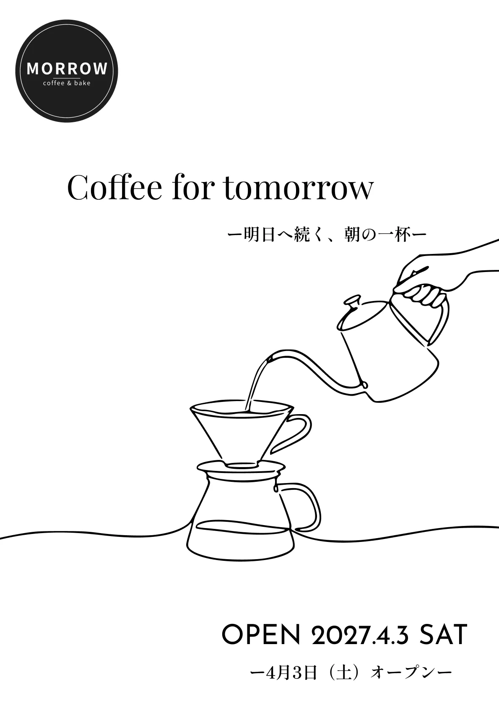
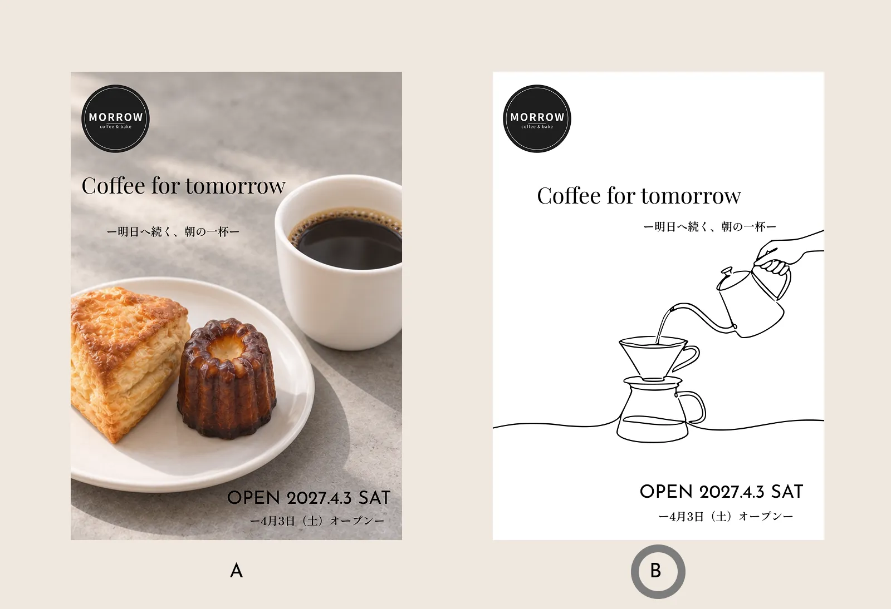
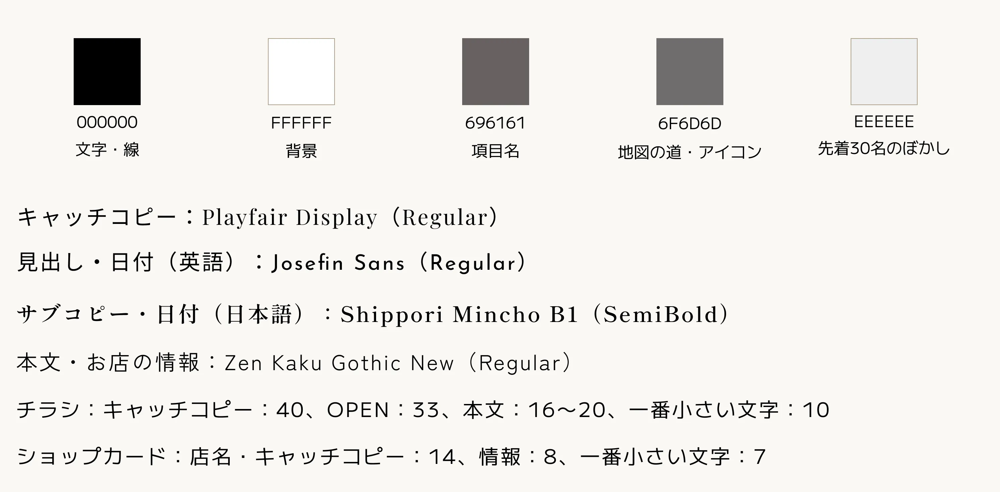
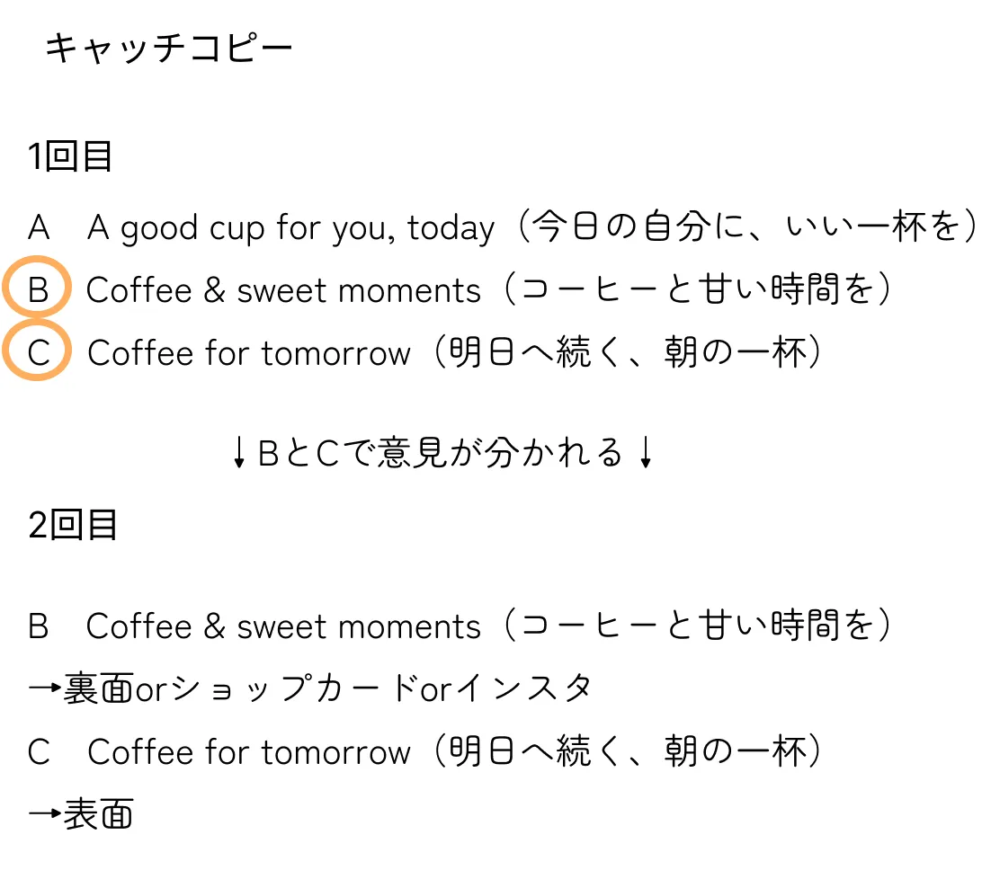
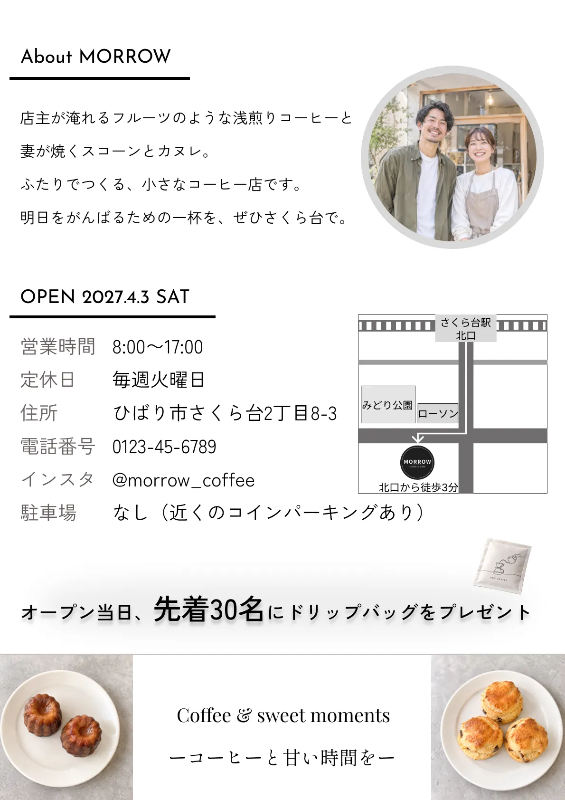
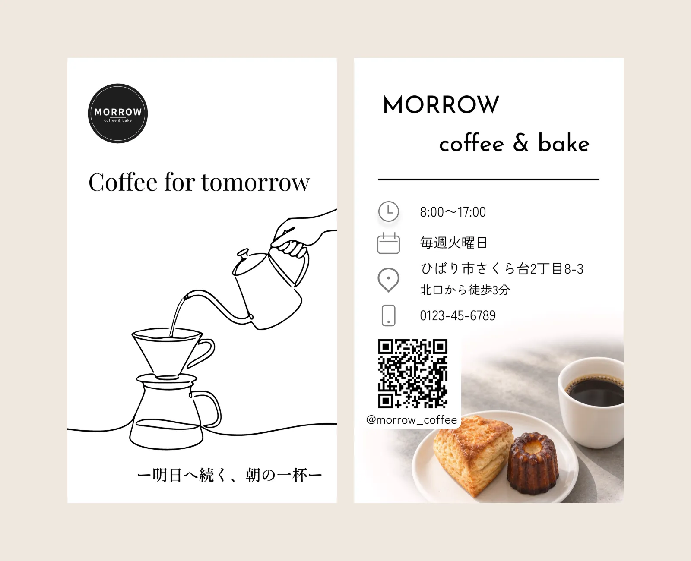
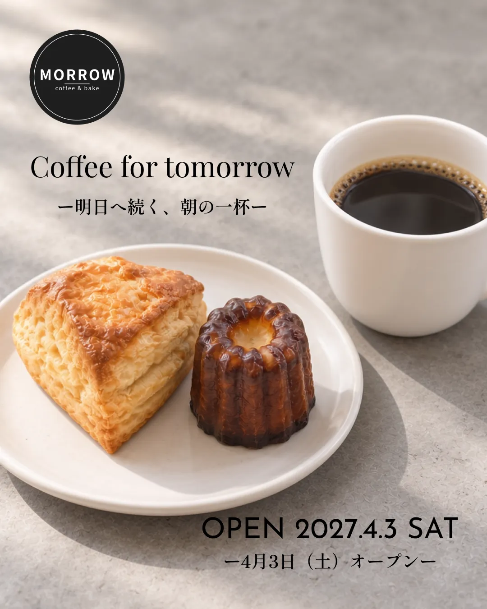

MORROW coffee & bake（架空のカフェのオープンチラシ・ショップカード）
#チラシ #ショップカード #SNS画像
※ 架空のお店です。お客様とのやりとりは、AIにお客様役をしてもらう練習として行いました。写真と線のイラストは画像生成AI（ChatGPT）で作ったイメージです。地図・アイコン・QRコードは自分で作りました。
- 対応内容
- ヒアリング・見積もり・キャッチコピー・チラシデザイン（両面・2案）・地図・ショップカード・インスタ用画像・修正（2回）・入稿データ作成
- 制作期間
- 2026年11月14日〜11月18日（作業時間 約6.8時間）
- 使用ツール
- Figma／Googleスプレッドシート（見積もり・書類の管理）／ChatGPT（画像生成）
- サイズ
- チラシ A4・縦・両面／ショップカード 91×55mm・両面／インスタ 1080×1350px

制作要件
ポートフォリオ用に制作した、架空のカフェ「MORROW coffee & bake」のオープン告知チラシ・ショップカード・インスタ用画像です。ココナラでのご相談から、見積り提案・修正・印刷用データの納品まで、実際の仕事と同じ流れで制作しました。ゴールは、地元にない「東京のカフェのようなお店ができる」ことを伝えて、オープンの日に来てもらうことです。
- ターゲット：20〜30代のおしゃれが好きな方と、近所に住むご年配の方
- 見るとき：駅前のお店や美容院に置いたチラシ、ポスティング、インスタ
- ご要望：東京のカフェのようなおしゃれな感じ／シンプル・白が多い・英語の文字・モノクロ／ピンクやはでな色はNG
- ご予算：デザイン代15,000円くらい（印刷代は別。モニター価格でお受けしました）
情報設計
表は「パッと見ておしゃれ」、うらは「行くために必要な情報」と、面ごとに役割を分けました。
- 表：ロゴ・キャッチコピー・オープン日だけにしぼり、白を大きく残す
- うら上：お店の紹介と、店主ご夫婦の写真で「どんな人のお店か」を伝える
- うら中：営業時間・定休日・住所・電話・インスタ・駐車場を表にまとめ、となりに地図
- うら下：オープン当日のプレゼントを大きく目立たせ、焼き菓子の写真で終わる
- ショップカード：オープンが終わっても使えるよう、オープン日やプレゼントは入れず、ずっと変わらない情報だけにしぼる
デザインコンセプト
「東京のカフェのような、白が多くてシンプルなチラシ」をめざし、写真を大きく使ったA案と、線のイラストで白を生かしたB案の2つをご提案しました。お客様が選んだのはB案で、A案はインスタ用の画像として使っています。

色は白・黒・グレーのみ。フォントは、キャッチコピーに Playfair Display、日付や見出しに Josefin Sans、日本語に Shippori Mincho B1 と Zen Kaku Gothic New を使い、英語のおしゃれさと日本語の読みやすさを両立させました。

キャッチコピー
「英語でかっこいい感じ」というご要望から、3案をご提案しました。
店名の「MORROW」が英語の古い言葉で「明日」という意味であることから作った「Coffee for tomorrow ー明日へ続く、朝の一杯ー」が表に決まりました。奥様が気に入った「Coffee & sweet moments」も、うら面で使うことになりました。

修正とやりとり
- 修正1回目：電話番号の追加／表に日本語のオープン日を追加（英語だけだと伝わりにくいというご家族の声から）／「店主が淹れる」「妻が焼く」に言葉を変更／プレゼントの文を目立たせる
- 修正2回目：ショップカードの住所の下に「北口から徒歩3分」を追加
- ほかのお店で撮った写真は、来店したときにイメージがちがってしまうため、使わずに今ある商品の写真をご提案しました
- オープン日が1月の終わりまで決まらないため、ココナラのお届け日数（最大30日）に合わせて、ご購入のタイミングと日程を組み直しました
デザインの工夫
- 英語だけでは読めない方のために、英語の下に小さく日本語をそえました
- 地図は道順に必要なものだけにしぼって自分で作り、ご年配の方にも分かりやすくしました
- 営業時間などのアイコンも自分で作り、大きさと線の太さをそろえました
- 線のイラストをベクター（形のデータ）に作り直し、A4に大きく印刷してもくっきり出るようにしました

ショップカードは、チラシと同じ線のイラストを表に使い、うらにはお店の情報とQRコードをまとめました。QRコードは、印刷しても読みとれる大きさ（約1.6cm）にしています。

インスタ用の画像は、選ばれなかったA案の写真を生かして、今のインスタで大きく表示される縦長（1080×1350px）に作り直しました。

振り返り・今後の改善
作業時間をタイムトラッカーで記録しました（ヒアリング1.3時間／デザイン4.0時間／修正0.4時間／入稿データ0.3時間／書類・やりとり0.5時間／調べもの0.3時間）。チラシ両面にショップカードとインスタ用画像も加わりましたが、前回より短い時間で仕上げることができました。
- 金額のまちがいや、古いファイルを送ってしまうミスがあったため、送る前に「金額・日にち・ファイルの中身」を確認するチェックを決めました
- インスタ用の形やQRコードなど、あとから決まったことをヒアリングシートに足しました
- 画像生成AIの絵は、印刷の大きさに足りるかを最初に確認するようにします